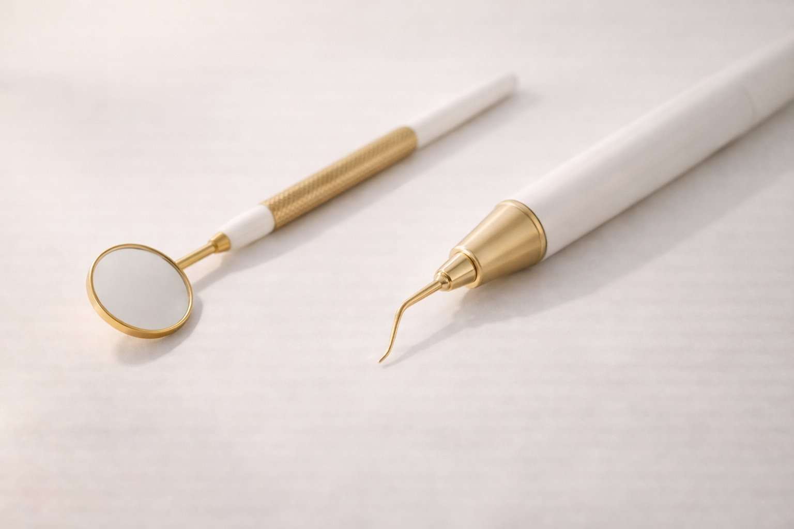

Vađenje živca ne boli — moderna endodoncija to dokazuje. Sačuvajte zub umjesto vađenja.
Endodoncija je liječenje unutrašnjosti zuba — korijenskih kanala i zubne pulpe. Kad karijes prodre duboko ili zub dobije udarac, može doći do upale živca. Endodontskim liječenjem uklanjamo uzrok boli i spašavamo prirodni zub.
Prirodni zub je uvijek bolja opcija. Endodontski liječeni zub može trajati cijeli život uz pravilnu njegu. S modernim tehnikama i dobrom anestezijom, liječenje korijenskog kanala ne boli više od postavljanja plombe.